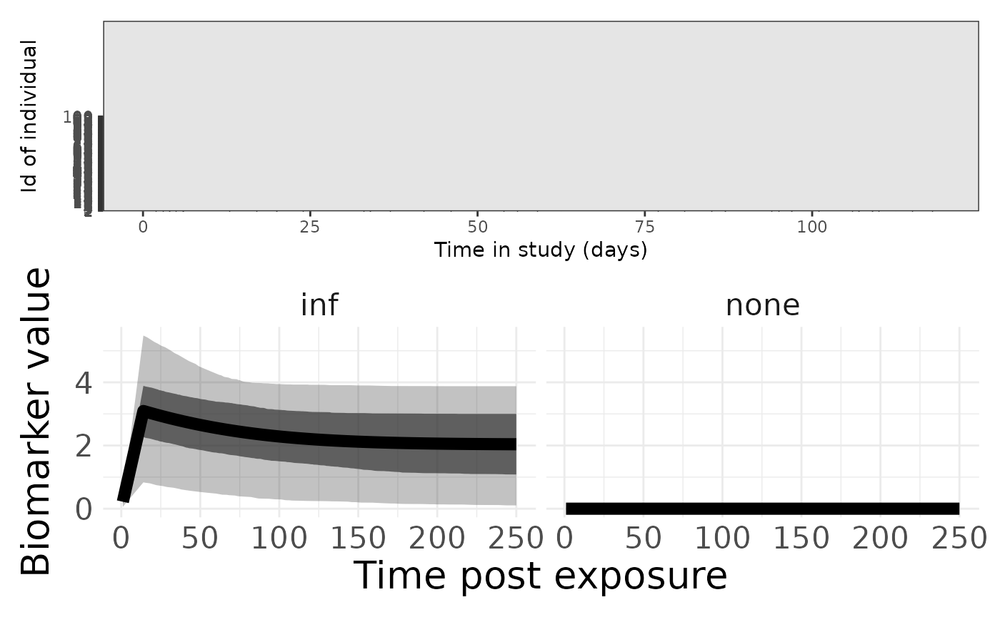
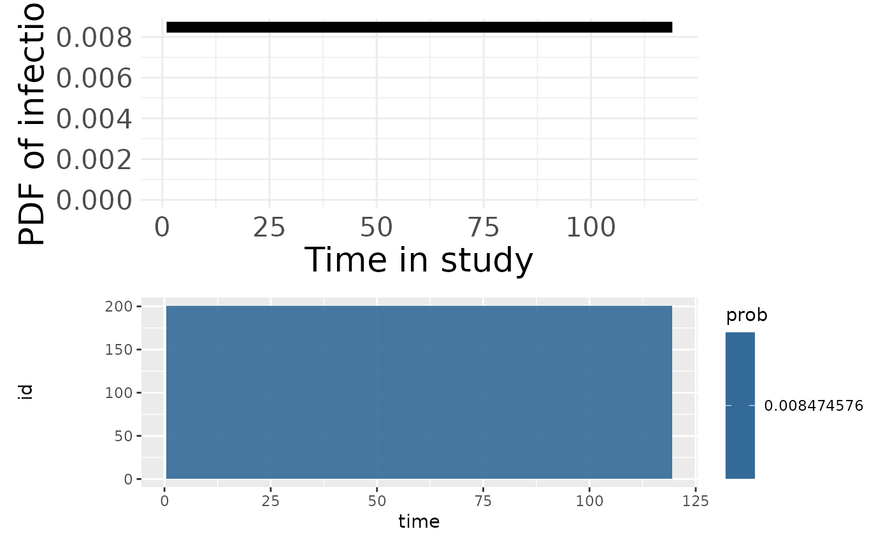
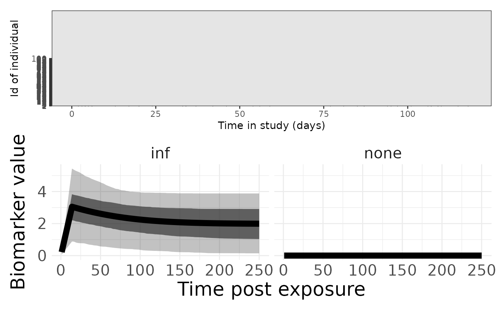

cs1_sim_recovery.RmdThis document describes the steps and components of the provided R code for creating and running serological models using simulated data. The code defines observational models, antibody kinetics models, and runs inference using MCMC methods.
This data has been generated using serosim.
sim_model_cop <- readRDS(file = "cesCOP_inputs.RDS")
sim_res_cop <- readRDS(file = "cesCOP_sim_data_0.5.rds")
#modeli <- readRDS(file = system.file("extdata", "vig_data", "cesCOP", "cesCOP_inputs.RDS", package = "serojump"))
#res <- readRDS(file = system.file("extdata","vig_data", "cesCOP", "cesCOP_sim_data_0.5.RDS", package = "serojump"))
#modeli <- readRDS(file = "cesCOP_inputs.RDS")
#modeli <- readRDS(file = "cesCOP_sin_data_0.5.RDS")
data_titre_model <- sim_res_cop$observed_biomarker_states %>% select(i, t, value) %>% rename(id = i, time = t, titre = value)
data_titre_model <- data_titre_model %>% mutate(biomarker = "sVNT") %>% as.data.frame %>% rename(sVNT = titre)
# Check the entries are sensible
check_sero_no_single_entries(data_titre_model)## No single entries in data_sero!,
check_sero_timings(data_titre_model)## No individuals with less than 15 days in the study!
obsLogLikelihood <- function(titre_val, titre_est, pars) {
ll <- dnorm(titre_val, titre_est, pars[1], log = TRUE)
}
infSerumKinetics <- function(titre_est, timeSince, pars) {
a <- pars[1]
b <- pars[2]
c <- pars[3]
if (timeSince < 14) {
titre_est <- titre_est + log(exp(a) + exp(c)) * (timeSince) / 14;
} else {
titre_est <- titre_est + log(exp(a) * exp(-b/10 * (timeSince - 14)) + exp(c));
}
titre_est
}
noInfSerumKinetics <- function(titre_est, timeSince, pars) {
titre_est_log <- titre_est - pars[1] * (timeSince)
titre_est_log <- max(0, titre_est_log)
titre_est_log
}
# Define the biomarkers and exposure types in the model
biomarkers <- c("sVNT")
exposureTypes <- c("none", "inf")
exposureFitted <- "inf"
# Define the observational model
observationalModel <- list(
names = c("sVNT"),
model = makeModel(
addObservationalModel("sVNT", c("sigma"), obsLogLikelihood)
), # observational model,
prior = bind_rows(
addPrior("sigma", 0.0001, 4, "unif", 0.0001, 4)
)
)
# Define the antibody kinetics model
abkineticsModel <- list(
model = makeModel(
addAbkineticsModel("none", "sVNT", "none", c("wane"), noInfSerumKinetics),
addAbkineticsModel("inf", "sVNT", "inf", c("a", "b", "c"), infSerumKinetics)
),
prior = bind_rows(
addPrior("wane", 0.0, 0.01, "unif", 0.0, 0.01), # observational model
addPrior("a", -6, 6, "norm", 2, 2), # ab kinetics
addPrior("b", 0, 1, "norm", 0.3, 0.05), # ab kinetics
addPrior("c", 0, 4, "unif", 0, 4) # ab kinetics
)
)
model_cop <- createSeroJumpModel(
data_sero = data_titre_model,
data_known = NULL,
biomarkers = biomarkers,
exposureTypes = exposureTypes,
exposureFitted = exposureFitted,
observationalModel = observationalModel,
abkineticsModel = abkineticsModel)## OUTLINE OF INPUTTED MODEL
## There are 1 measured biomarkers: sVNT
## There are 2 exposure types in the study period: none, inf
## The fitted exposure type is inf
## PRIOR DISTRIBUTIONS
## Prior parameters of observationalModel are: sigma
## Prior parameters of abkineticsModel are: wane, a, b, c
## No single entries in data_sero!,
## No individuals with less than 15 days in the study!
## Exposure rate is not defined over the time period. Defaulting to uniform distribution between 1 and 119 .Before running the whole model it is good to check the data and the
priors. This can be done using a suit of functions
plotPriors function.
p1 <- plotSero(model_cop)
p2 <- plotPriorPredictive(model_cop)
p3 <- plotPriorInfection(model_cop)
p1 / p2
p3
sim_model_no_cop <- readRDS(file = "cesNoCOP_inputs.RDS")
sim_res_no_cop <- readRDS(file = "cesNoCOP_sim_data_0.5.rds")
#modeli <- readRDS(file = system.file("extdata", "vig_data", "cesNoCOP", "cesNoCOP_inputs.RDS", package = "serojump"))
#res <- readRDS(file = system.file("extdata", "vig_data", "cesNoCOP", "cesNoCOP_sim_data_0.5.RDS", package = "serojump"))
data_titre_model <- sim_res_no_cop$observed_biomarker_states %>% select(i, t, value) %>% rename(id = i, time = t, titre = value)
data_titre_model <- data_titre_model %>% mutate(biomarker = "sVNT") %>% as.data.frame %>% rename(sVNT = titre)
model_no_cop <- createSeroJumpModel(
data_sero = data_titre_model,
data_known = NULL,
biomarkers = biomarkers,
exposureTypes = exposureTypes,
exposureFitted = exposureFitted,
observationalModel = observationalModel,
abkineticsModel = abkineticsModel)## OUTLINE OF INPUTTED MODEL
## There are 1 measured biomarkers: sVNT
## There are 2 exposure types in the study period: none, inf
## The fitted exposure type is inf
## PRIOR DISTRIBUTIONS
## Prior parameters of observationalModel are: sigma
## Prior parameters of abkineticsModel are: wane, a, b, c
## No single entries in data_sero!,
## No individuals with less than 15 days in the study!
## Exposure rate is not defined over the time period. Defaulting to uniform distribution between 1 and 119 .Before running the whole model it is good to check the data and the
priors. This can be done using a suit of functions
plotPriors function.
p1 <- plotSero(model_no_cop)
p2 <- plotPriorPredictive(model_no_cop)
p1 / p2
rj_settings <- list(
numberChainRuns = 4,
iterations = 400000,
burninPosterior = 200000,
thin = 1000
)
save_info_cop <- list(
file_name = "simulated_data",
model_name = "cop"
)
save_info_no_cop <- list(
file_name = "simulated_data",
model_name = "no_cop"
)
# Run these but take a while
#model_summary_cop <- runSeroJump(model_cop, rj_settings, save_info = save_info_cop)
#model_summary_no_cop <- runSeroJump(model_no_cop, rj_settings, save_info = save_info_no_cop)
model_summary_cop <- readRDS("cop_model_summary.RDS")
model_summary_no_cop <- readRDS("no_cop_model_summary.RDS")
plotMCMCDiagnosis(model_summary_cop, save_info = save_info_cop)
# takes ages to run these so comment out!
#plotPostFigsSim(model_summary_cop, sim_model_cop, sim_res_cop, save_info = save_info_cop)
plotMCMCDiagnosis(model_summary_no_cop, save_info = save_info_no_cop)
# takes ages to run these so comment out!
#plotPostFigsSim(model_summary_no_cop, sim_model_no_cop, sim_res_no_cop, save_info = save_info_no_cop)